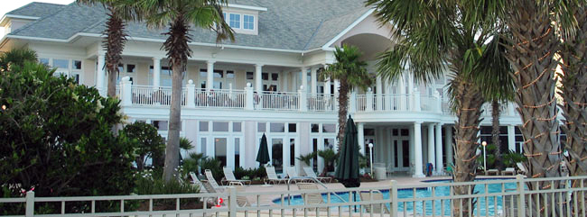

The Sand Crab Cafe is located in The Club House and has three dining areas: The Terrace, The Dining Room, and The Cabana. The Terrace is outdoor dining with a breathtaking view of the Gulf, especially at sunset. The Dining Room is casual, indoor dining on the second floor. The Cabana is poolside.

Sand Crab Cafe Hours |
||
|---|---|---|
 |
The Terrace | 11:00a.m. - 9:00 p.m. |
| The Dining Room | 7:00 a.m. - 11:00p.m. | |
| The Cabana | 10:00 a.m. - 7:00 p.m. | |
| Room Service is avaliable from 6:00 a.m. until 12:00 a.m. Please call extension 439 to place an order. |
||
| Chocolate Grand Marnier Cake |
||